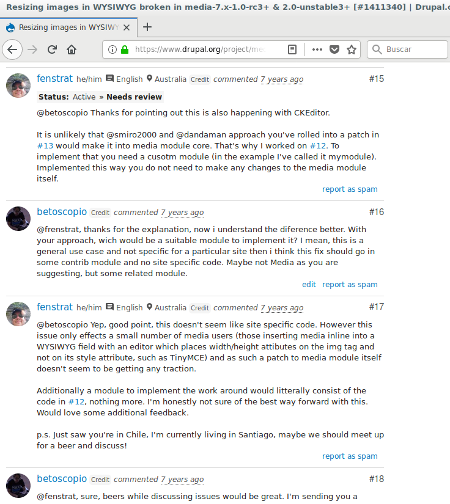
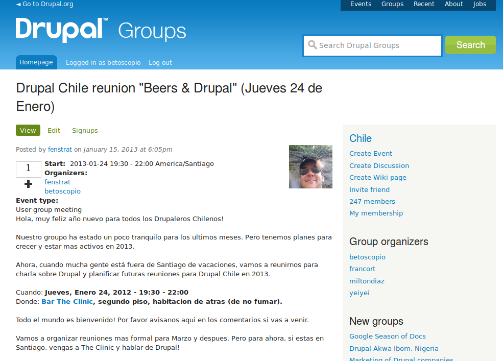

Abrazando el cambio, adaptandose a la evolución del desarrollo web
Iquique, UNAP, 24 de Mayo, 2019
Y quién es?
@betoscopio

- Estudie Ciencias de la Computación
- Inspirado por el movimiento de Software Libre
- Usuario de Linux desde el 2001
- Contribuidor al proyecto Drupal y organizador de comunidad local desde el 2013
- Hago webs y lo relacionado
Embracing the change
Heraclitus of Ephesus (~500 BC)

Everything changes and nothing stands still.
All is flux, nothing stays still.
No man ever steps in the same river twice.
All things . . . are in flux like a river. Heraclitus’s insistence on the process of change as fundamental to the world poses a question to us when we are facing difficult changes that we might want to deny or resist. By insisting that something or someone stay the same, could it be that we are destroying the very thing we wish to preserve? In any particular case, when we are resisting change, we might ask ourselves, is this like trying to stop a river’s waters from flowing?
Evolución del desarrollo web


Sitios web autoadministrables
- Primeros sistemas web
- Aplicaciones Cliente/Servidor (no web)
- Visual Basic, ActionScript
- ASP
- Java J2EE, JSF
- Web "recomendations"
The LAMP Golden Age
- La disrrupción de los CMS
- Mambo (Joomla)
- Wordpress 1.x
- Drupal 4.x
- Media Wiki
- Complex web applications
- Google Maps, Facebook → Ajax
Aquí viene Ruby
- Ruby on Rails
- El efecto RoR
- ORM, Scaffolding, Relection, "Real OOP"
- Docenas de clones...
- Alguien dijo hype?

Douglas Crockford (May 2008)
The new cool kid in the block

El auge de los proyectos Javascript

Tendencias en búsqueda de lenguages 2008-2017

Tendencias en búsqueda de lenguages 2012-2017

Node.js
Hype already?
Tendencias de proyectos 2012-2017

La llegada de los Microservicios
Cambios en la infraestructura
En el principio estaba el servidor FTP
- FTP Uploads
- El servidor WAMP
- ... si eso significa servidores de producción con Apache + Windows
La era de los shared services
- Shared Hosts: Dreamhost, GatorHost, BlueHost ...
- "We only use PHP 4"
- VPS
- Virtualización
Llega la nube


Platfform as a Service (PAAS)


Organización de los equipos de trabajo
- En el principio estaba el Webmaster
- "Programador" + "diseñador"
- Programador + diseñador + editor
- "El de TI" + developer + editor + project manager
- El equipo de infraestructura + backend developer + front end/UX developer + equipo QA + equipo editorial + project manager(s) + equipo de marketing

The "Full Stack Developer"
"Full Stack Developer"

Let there be web divisions

Jeffrey Zeldman, July 2007
El "Futuro" es ahora
... en algún lugar
Crockford on JavaScript - Volume 1: The Early Years
"Good ideas took time to become mainstream..."

- Yo, hace algún tiempo
- Cuando viajas, ves diferentes realidades
- Lo que estás acostumbrado, la mayoría de las veces no es "lo normal"
Mi camino en Drupal
- Encontré Drupal, por que quería un sistema con código HTML limpio
- Aprendí sólo usando con información de internet
- DrupalCon SF 2010 (D6)
- Para encontrarme otra persona usando la herramienta pasó un año
La comunidad Drupal
- Quería conocer otros Drupaleros
- Empecé a hablar con otros drupaleros en Latinoamérica (y el mundo)
- Un proyecto donde podía hacer una diferencia
- Comenzamos a organizar reuniones regulares
- Asistí a mi primer evento, Drupal Summit Latino 2013 (Ecuador)
Be where things happend


DrupalCamp Santiago de Chile 2015
Cómo adaptarse?
Busca a personas con intereses similares
Se un agente de cambio
Si no funciona
... intentalo un par de veces más,
al menos.

- Siempre mira alrededor
- Todo lo que conoces está cambiando
- Aprende a adaptarte
- Da forma a tu entorno
- ... o muevete
The world is smaller
... be part of something bigger.
Gracias
@betoscopio